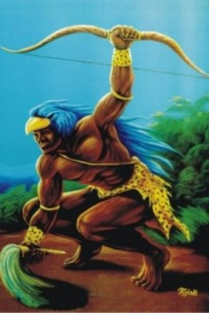

Jonville,Quarta-feira, 27 de Fevereiro de 2013

Oxossi ou osóssi
Òrìsà da Caça e da Fartura !!! Em tempos distantes, Odùdùwa , Obà de Ifé, diante do seu Palácio Real, chefiava o seu povo na festa da colheita dos inhames. Naquele ano a colheita havia sido farta, e todos em homenagem, deram uma grande festa comemorando o acontecido, comendo inhame e bebendo vinho de palma em grande fartura. De repente, um grande pássaro, (èlèye), pousou sobre o Palácio, lançando os seus gritos malignos, e lançando fardas de fogo, com intenção de destruir tudo que por ali existia, pelo fato de não terem oferecido uma parte da colheita as Àjès (feiticeira, portadoras do pássaro), personificando seus poderes atravez de Ìyamì Òsóróngà. Todos se encheram de pavor, prevendo desgraças e catástrofes. O Oba então mandou buscar Osotadotá, o caçador das 50 flechas, em Ilarê, que, arrogante e cheio de si, errou todas as suas investidas, desperdiçando suas 50 flechas. Chamou desta vez, das terras de Moré, Osotogi, com suas 40 flechas. Embriagado, o guerreiro também desperdiçou todas suas investidas contra o grande pássaro. Ainda foi, convidado para grande façanha de matar o pássaro, das distantes terras de Idô, Osotogum, o guardião das 20 flechas. Fanfarão, apesar da sua grande fama e destreza, atirou em vão 20 flechas, contra o pássaro encantado e nada aconteceu. Por fim, já com todos sem esperança, resolveram convocar da cidade de Ireman, Òsotokànsosó, caçador de apenas uma flecha. Sua mãe Yemonjá, sabia que as èlèye viviam em cólera, e nada poderia ser feito para apaziguar sua fúria a não ser uma oferenda, vez que três dos melhores caçadores falharam em suas tentativas. Yemonjá foi consultar Ifá para Òsotokànsosó. Foi consultar os Bàbálàwo. Eles disseram que faça oferendas. Eles dizem que Yemonjá prepare ekùjébú (grão muito duro) naquele dia. Eles dizem que tenha também um frango òpìpì (frango com as plumas crespas). Eles dizem que tenha èkó (massa de milho envolta em folhas de bananeira). Eles dizem que Yemonjá tenha seis kauris. Yemonjá faz então assim, pediram ainda que, oferecesse colocando sobre o peito de um pássaro sacrificado em intenção. Eles dizem que ofereça em uma estrada, dizem que recite o seguinte: "Que o peito da ave receba esta oferenda". Neste exato momento, o seu filho disparava sua única flecha em direção ao pássaro, esse abria sua guarda recebendo a oferenda ofertada por Yemonjá, recebendo também a flecha serteira e mortal de Òsotokànsosó. Todos após tal ato, começaram a dançar e gritar de alegria: "òsóòsì! òsóòsì!" (caçador do povo). A partir desse dia todos conheceram o maior guerreiro de todas as terras, foi referenciado com honras e carrega seu título até hoje. Òsóòsì.
Desrespeitando a proibição de caçar num determinado dia, não cumprindo assim a determinação de Ifá, Osóssi seguiu seu caminho em direção à floresta. Osun, sua esposa, cansada de tanto ver seu marido quebrar os tabus, abandonou o caçador. Sozinho, caminhando pela mata, Osóssi escutou um canto que dizia: "Eu não sou bicho de penas para ser morta por você!!!". Era o canto de uma serpente, era Osumarê. Obstinado, Osóssi encontrou a serpente, atravessando-a com sua lança e partindo-a em vários pedaços. No caminho de volta, Osóssi continuou escutando o mesmo canto. Ao chegar em casa, foi para a cozinha e preparou uma iguaria com o fruto de sua caça e, como sempre estava faminto, devorou-a rapidamente. Na manhã seguinte Osun retornou à casa para ver como estava o caçador. Para seu espanto encontrou Osóssi morto, caído no chão e ao seu lado um rastro de cobra que se alongava até a entrada da floresta. Desesperada, Osun procurou Orunmilá que ouviu seu pleito, fez renascer Osóssi como orisá protetor de todos os caçadores e transformou Osun num rio sagrado. Conta-se no Brasil que Osóssi era o irmão mais jovem de Ogun e Esu, todos três filhos de Yemonjá. Esu, por ser indisciplinado, foi por ela mandado embora. Ogun trabalhava no campo e Osóssi caçava nas florestas vizinhas. A casa encontrava-se, assim, abastecida de produtos agrícolas e caça. No entanto, um Babalaô alertou Yemonjá para o risco de Ossanyin, aquele que possuía o conhecimento das virtudes das plantas e vivia nas profundezas da floresta, enfeitiçar Osossi e obrigá-lo a ficar em sua companhia. Yemonjá ordenou então ao filho que renunciasse às atividades de caçador. Ele, porém, de personalidade independente, continuou suas incursões pela floresta. Tendo encontrado Ossanyin, que o convidou a beber uma poção de folhas maceradas, caiu em estado de amnésia. Ficou, pois, vivendo em companhia de Ossanyin, como previra o Babalaô. Ogun, inquieto com a ausência do irmão, partiu à sua procura, encontrando-o nas profundezas da floresta. Ele o trouxe de volta, mas Yemonjá irritada, não quis receber o filho desobediente. Revoltado com a intransigência materna, Ogun recusou-se a continuar em casa. Quanto a Osóssi, este preferiu voltar para a floresta, para perto de Ossanyin. Yemonjá desesperada por ter perdido os três filhos, transformou-se em um rio.
Desrespeitando a proibição de caçar num determinado dia, não cumprindo assim a determinação de Ifá, Osóssi seguiu seu caminho em direção à floresta. Osun, sua esposa, cansada de tanto ver seu marido quebrar os tabus, abandonou o caçador. Sozinho, caminhando pela mata, Osóssi escutou um canto que dizia: "Eu não sou bicho de penas para ser morta por você!!!". Era o canto de uma serpente, era Osumarê. Obstinado, Osóssi encontrou a serpente, atravessando-a com sua lança e partindo-a em vários pedaços. No caminho de volta, Osóssi continuou escutando o mesmo canto. Ao chegar em casa, foi para a cozinha e preparou uma iguaria com o fruto de sua caça e, como sempre estava faminto, devorou-a rapidamente. Na manhã seguinte Osun retornou à casa para ver como estava o caçador. Para seu espanto encontrou Osóssi morto, caído no chão e ao seu lado um rastro de cobra que se alongava até a entrada da floresta. Desesperada, Osun procurou Orunmilá que ouviu seu pleito, fez renascer Osóssi como orisá protetor de todos os caçadores e transformou Osun num rio sagrado. Conta-se no Brasil que Osóssi era o irmão mais jovem de Ogun e Esu, todos três filhos de Yemonjá. Esu, por ser indisciplinado, foi por ela mandado embora. Ogun trabalhava no campo e Osóssi caçava nas florestas vizinhas. A casa encontrava-se, assim, abastecida de produtos agrícolas e caça. No entanto, um Babalaô alertou Yemonjá para o risco de Ossanyin, aquele que possuía o conhecimento das virtudes das plantas e vivia nas profundezas da floresta, enfeitiçar Osossi e obrigá-lo a ficar em sua companhia. Yemonjá ordenou então ao filho que renunciasse às atividades de caçador. Ele, porém, de personalidade independente, continuou suas incursões pela floresta. Tendo encontrado Ossanyin, que o convidou a beber uma poção de folhas maceradas, caiu em estado de amnésia. Ficou, pois, vivendo em companhia de Ossanyin, como previra o Babalaô. Ogun, inquieto com a ausência do irmão, partiu à sua procura, encontrando-o nas profundezas da floresta. Ele o trouxe de volta, mas Yemonjá irritada, não quis receber o filho desobediente. Revoltado com a intransigência materna, Ogun recusou-se a continuar em casa. Quanto a Osóssi, este preferiu voltar para a floresta, para perto de Ossanyin. Yemonjá desesperada por ter perdido os três filhos, transformou-se em um rio.
Copyright © 2011- Todos direitos reservados à ACCAIA
Rua Arildo Jose da Silva,99 - Itinga Joinville - SC - Cep: 89245000
::: Suporte 04791261971 :::
Editor on line